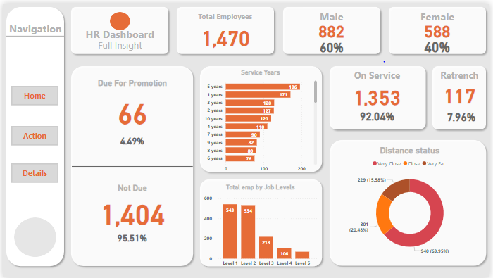
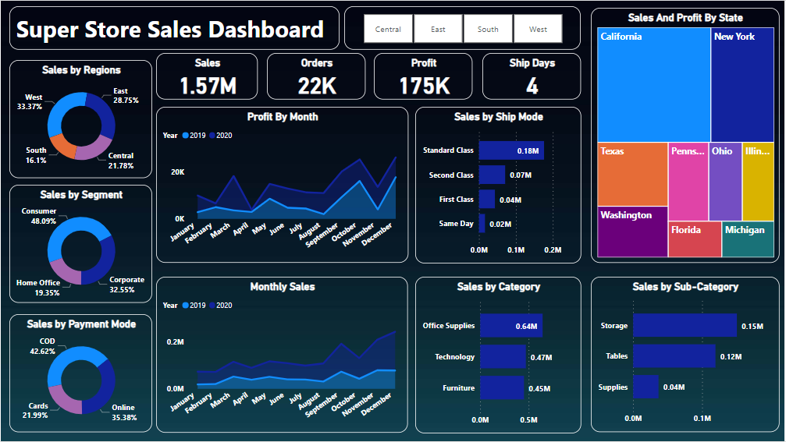
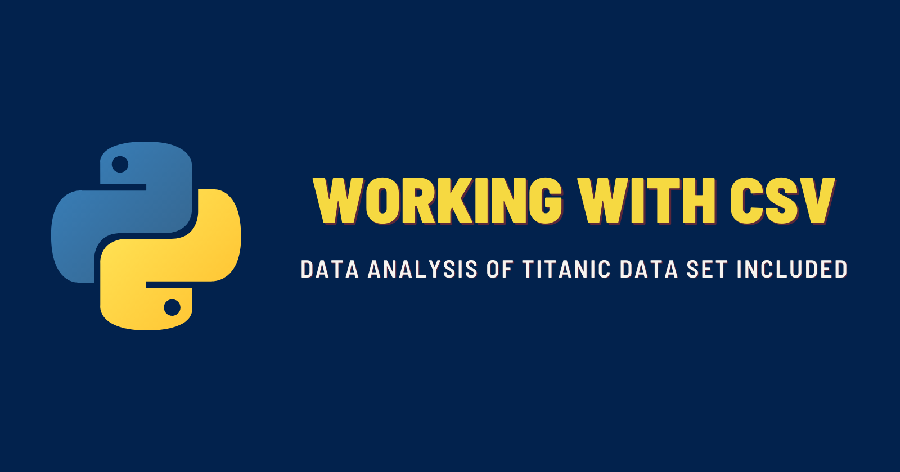
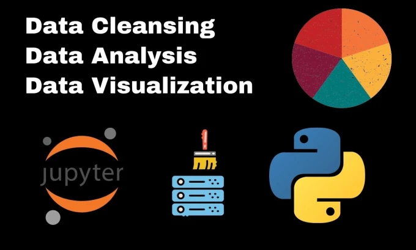
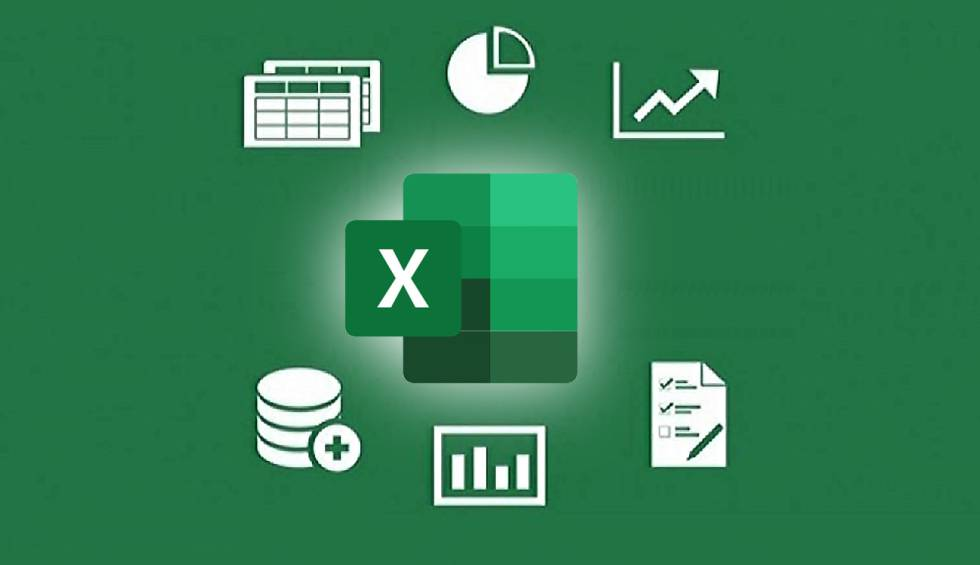

In this portfolio project, I leveraged Power BI to analyze an HR dataset, aiming to gain valuable insights into various aspects of employee data. By utilizing Power BI's interactive visualizations and advanced analytics capabilities, I explored the dataset to uncover patterns, trends, and key metrics related to human resources.

Unlock the potential of Super Store sales data with compelling visualizations. Dive into regional and segment sales, payment modes, and monthly sales and profit figures. Uncover valuable patterns as you explore sales and profit breakdowns for each state. Additionally, analyze the impact of different shipment modes on overall sales. Experience the power of data visualization and gain actionable insights for informed decision-making.
In this portfolio project, I explored an analysis of Olympic history data sourced from Kaggle. Utilizing SQL, I delved into the dataset to answer a diverse range of 20 different questions pertaining to the Olympics.
I have actively engaged with real-world SQL interview questions and challenges sourced from reputable platforms like LeetCode, allowing me to tackle diverse data sets and enhance my problem-solving skills.

In this project, utilizing pandas, seaborn, and matplotlib,I analyzed the Titanic dataset from Kaggle, answering questions about survival rates, and passenger demographics. I explored the data, obtained key statistics, handled missing values, performed categorical data encoding, and conducted univariate and bivariate analyses. This project demonstrates my data analysis skills and ability to derive insights from real-world datasets

This Python project utilizes Pandas, Seaborn, NumPy, and Matplotlib libraries for data analysis. It involves importing the required libraries, exploring dataset details (e.g., displaying first/last rows, shape, and information), performing data cleaning (replacing '--' with NaN), checking for null values, finding top channels by video uploads, calculating correlation matrix, and determining grades with maximum video uploads, highest average views, subscribers, and video views
The Bike Purchase Analysis project aims to uncover valuable insights into consumer behavior when it comes to buying bikes. By analyzing various aspects such as distance, age, and average income, we seek to understand the factors that influence purchasing decisions. This Excel portfolio project combines data analysis techniques with visualizations to provide meaningful and actionable insights

In this Excel project, I analyzed sales data using pivot tables to categorize and visualize the information. The project included various visualizations such as graphs, map charts, parklines, line charts, and pie charts. Dynamic labels were incorporated for the pie chart, and the dashboard was designed to link all these elements using slicers for seamless navigation. The project aims to provide a comprehensive and visually appealing overview of sales data, facilitating easy analysis and decision-making.